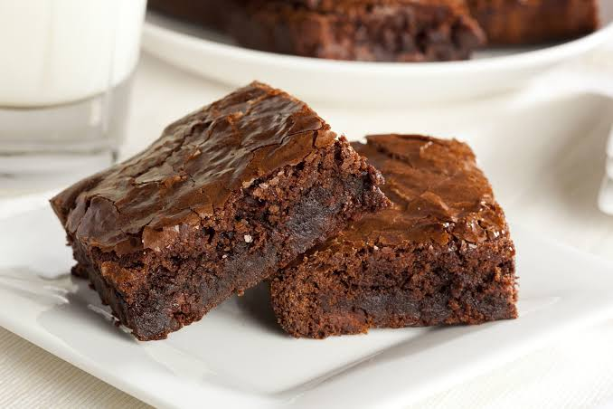

Brownie de Chocolate
Casquinha craquelada por fora e massa densa, úmida e bem chocolatuda por dentro.
Preparo35 min
Rendimento9 pedaços
DificuldadeFácil

Ingredientes
Modo de preparo
- Derreta o chocolate meio amargo junto com a manteiga no micro-ondas (de 30 em 30 segundos) ou em banho-maria.
- Em uma tigela, bata os ovos com o açúcar até formar um creme claro e fofo.
- Incorpore o chocolate derretido aos ovos e misture delicadamente.
- Peneire a farinha de trigo e o chocolate em pó sobre a mistura e mexa apenas até homogeneizar.
- Despeje em uma forma untada e forrada com papel manteiga e asse a 180°C por 25 minutos.
Dica: Não deixe assar demais; o palito deve sair levemente úmido para garantir a textura cremosa.